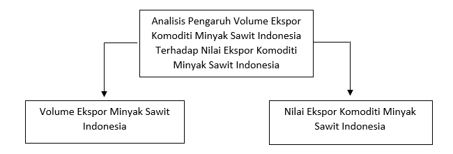
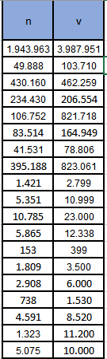
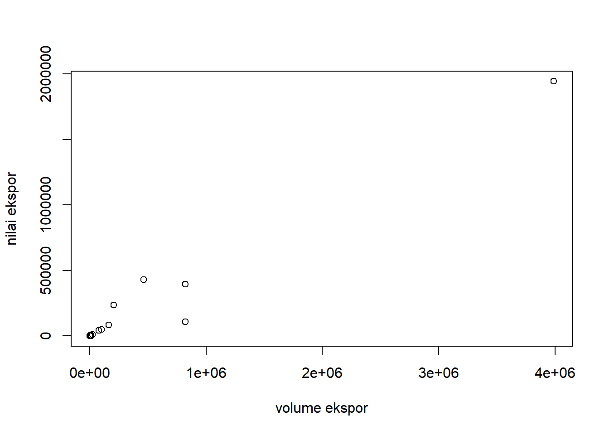
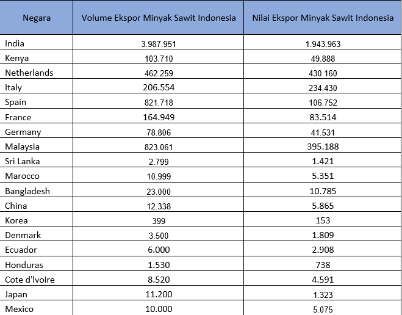

library(tidyverse)
library(readxl)Analisis Pengaruh Volume Ekspor Minyak Sawit Indonesia Terhadap Nilai Ekspor Minyak Sawit Indonesia Pada Tahun 2019
Metode Penelitian Politeknik APP Jakarta

1 Pendahuluan
1.1 Latar belakang
Perdagangan internasional adalah hubungan antara satu negara dengan negara lain untuk memenuhi kebutuhan di dalam negaranya tidak dan di penuhi dengan negara lain dengan berdagang. Perdagangan internasional terjadi dikarenakan belum ada suatu negara yang bisa memenuhi kebutuhan negaranya sendiri, baik dari barang atau jasa. Karena terdapat keterbatasan sumber daya, iklim, letak geografis, dan juga dari keterbelakangan sosial ekonomi yang menjadi batas kemampuan suatu negara untuk memenuhi kebutuhan negaranya (Tampubolon, 2020). Maka dari itu, terdapat peluang agar mendapatkan keuntungan dari suatu perdagangan oleh dua negara atau lebih didalamnya.
Aktivitas yang ada didalam perdagangan internasional adalah ekspor dan impor dari suatu negara. Impor adalah aktivitas memasukkan atau membeli komoditi atau jasa dari luar pabean dan juga sebaliknya, untuk ekspor sendiri adalah kegiatan mengeluarkan atau menjual komoditi atau jasa ke luar pabean. Jika neraca perdagangan suatu negara lebih baik atau bernilai positif itu dikarenakan negara tersebut lebih banyak menjual dari pada membeli atau lebih banyak mengekspor daripada mengimpor suatu komoditi atau jasa. Namun sebaliknya, jika negara tersebut lebih banyak mengimpor komoditi atau jasa daripada mengekspor maka neraca perdagangan negara tersebut buruk atau bernilai negatif (Tambunan, 2001:1) dalam (Turnip et all, 2016).
Ekspor terjadi karena surplus dari produksi suatu negara yang selanjutnya dari surplus tersebut dijual dan dipasarkan ke luar negeri dan akan menyebabkan pertumbuhan ekonomi. Dari hal tersebut akan memberikan kontribusi langsung dalam kenaikan pendapatan suatu negara. Pendapatan suatu negara yang meningkat dapat meningkatkan pula PDB dari suatu negara (Simpar, 2010) dalam (Novianingsih, 2011).
Ekspor pada Indonesia terbagi menjadi dua, yaitu migas dan non migas. Ekspor migas sendiri indonesia mengekspor komoditi seperti pengadaan gas, pertambangan seperti minyak mentah dan gas, dan hasil minyak. Pada sektor migas Indonesia lebih unggul pada gas bumi karena indonesia banyak persediaannya pada gas ( Purnamasari, 2018). Pada sektor non migas, indonesia cukup bertumpu pada bidang pertaniaan, yaitu komoditas minyak kelapa sawit, kopi, kakao, karet, teh, hasil laut, dan rempah-rempah seperti cengkeh dan lada.
Volume ekspor sangat mempengaruhi terhadap nilai ekspor, karena jika volume ekspor tersebut besar maka dari itu nilai ekspor yang dihasilkan juga sangat besar dari ekspor tersebut. Volume ekspor besar dipengaruhi oleh tersedianya komoditi tersebut di negara yang menghasilkan komoditi tersebut, jika produksi komoditi tersebut besar maka besar pula volume yang dihasilkan. Nilai ekspor dipengaruhi oleh volume ekspor jika volume ekspor komoditi itu besar, besar pula nilai ekspor yang didapatkan. Tetapi, tidak selalu seperti itu volume ekspor tidak selalu mempengaruhi nilai ekspor.
Berdasarkan dari apa yang telah dijelaskan diatas, maksud dari penelitian ini adalah untuk mengetahui mengenai pengaruh volume ekspor komoditi minyak sawit Indonesia terhadap nilai ekspor komoditi minyak sawit Indonesia. Perbandingan yang dilakukan dari volume ekspor komoditi Indonesia dan nilai ekspor komoditi minyak sawit Indonesia. Harapannya agar volume ekspor komoditi minyak sawit ditingkatkan lagi jika mempengaruhi nilai ekspor komoditi minyak sawit Indonesia.
1.2 Ruang lingkup
Batasan masalah yang dibahas didalam penelitian ini adalah analisis mengenai permasalan pengaruh volume ekspor komoditi minyak sawit Indoneisa terhadap nilai ekspor komoditi minyak sawit Indonesia.
1.3 Rumusan masalah
Rumusan masalah pada penelitian ini sebagai berikut :
- Bagaimana volume ekspor komoditi minyak sawit indonesia?
- Bagaimana nilai ekspor komoditi minyak sawit Indonesia?
- Bagaimana pengaruh volume ekspor komoditi minyak sawit Indonesia terhadap nilai ekspor minyak sawit Indonesia?
1.4 Tujuan dan Manfaat Penelitian
Bedasarkan latar belakang masalah, maka dapat dijabarkan tujuan dari penelitian ini adalah :
Untuk menganalisis volume ekspor komoditi minyak sawit Indonesia.
Untuk menganalisis nilai ekspor komoditi minyak sawit Indonesia.
Untuk mengetahui pengaruh volume ekspor komoditi minyak sawit Indonesia terhadap nilai ekspor komoditi minyak sawit Indonesia.
Adapun manfaat dari penelitian, sebagai berikut :
Penelitian ini diharapkan dapat menjadi penambahan wawasan, pengetahuan dan informasi mengenai perdagangan Internasional dan juga ekspor minyak kelapa sawit bagi peneliti dan juga pembaca.
Penelitian ini dapat menjadi masukkan kepada pemerintahan dan menjadi pertimbangan oleh para pihak-pihak yang terkait dalam mengambil kebijakan agar dapat memperbaiki kualitas, mempertahankan, dan juga produksi maupun nilai minyak kelapa sawit Indonesia di pasar internasional.
1.5 Package
Ini tidak wajib ada di packages yang digunakan antara lain sebagai berikut:
2 Studi Pustaka
2.1 Perdagangan Internasional
Perdagangan internasional merupakan pertukan barang dan jasa ataupun faktor-fator lain yang melintasi perbatasan suatu negara dan dapat memiliki dampak terhadap perekonomian domestik ataupun dunia. Suatu negara memiliki alasan tertentu untuk melakukan perdagangan internasional, yaitu karena tiap negara memiliki keunggulan yang berbeda dalam menghasilkan suatu barang ataupun jasa. Dengan itu dapat lebih menguntungkan lagi jika negara lain memiliki spesialisasi pada keunggulan yang dimiliki dengan lebih baik dibandingkan negara lain. Selanjutnya, dengan adanya perdagangan maka dapat mencapai skala ekonomi saat berproduksi. Jika masing-masing negara memproduksi barang dengan jumlah yang banyak maka biaya yang dikeluarkan untuk melakukan produksi lebih rendah. Dengan adanya perdagangan pula, akan lebih menghemat waktu juga bagi suatu negara dibandingkan harus memproduksi semua barang sendiri (Markusen,et al. 2002).
Perdagangan Internasional terjadi dikarenakan setiap negara dengan negara mitranya mempunyai perbedaan, yang diantaranya perbedaan dalam kandungan sumber daya alam, penduduk, iklim, spesifikasi tenaga kerja, sumber daya manusia, teknologi, tingkat harga, geografis, struktur ekonomi, politik dan sosial, dan lain sebagainya. Dengan adanya perbedaan tersebut berkaitan pula dengan tingkat kapasitas produksi secara kualitas, kuantitas, dan jenis produksinya. Dengan perbedaan tersebut, terdapat dasar yang menguntungkan maka terjadilah perdagangan internasional (Halwani, 2005).
2.2 Kelapa Sawit
Kelapa sawit memiliki nama latin (Elaeis guineensis Jacq) yang merupakan komoditas dibidang perkebunan yang berada diposisi penting dalam sektor pertanian, karena tanaman yang dapat menghasilkan minyak dan lemak, minyak yang dihasilkan dari kelapa sawit menciptakan ekonomi terbesar. Minyak nabati yang dihasilkan kelapa sawit sendiri dapat dijadikan andalan dimasa yang akan datang karena memiliki banyak manfaat bagi kebutuhan manusia. Kelapa sawit memiliki peran penting maka dari itu harus ada peningkatan dari kualitas dan juga kuantitasnya agar dapat memenuhi kebutuhan masyarakat di negara kita dan juga para penduduk dunia. Untuk pembangunan nasional Indonesia kelapa sawit juga memiliki peranan penting. Perannya dalam pembangunan nasional adalah dapat menciptkan lapangan pekerjaan yang dapat mensejahterakan masyarakat dan menjadi sumber devisa negara dari menjual kelapa sawit keberbagai negara yang sangat membutuhkan kelapa sawit melalui ekspor kelapa sawit (Ismoyo et al., 2018).
Produk turunan dari pengolahan kelapa sawit adalah potensi untuk kegiatan pemasaran yaitu berupa minyak sawit (CPO) dan juga minyak inti sawit (PKO) (BPS-Statistics Indonesia, 2019). CPO (Crude Palm Oil) merupakan salah satu minyak sawit Indonesia yang menjadi produk unggulan pada ekspor kelapa sawit ke pasar dunia. CPO yang ada di Indonesia yang dapat mencapai pasar internasional dalam kegiatan mengekspor dengan standar mutu berdasarkan SNI 01-2901-2006 mutu CPO yang sesuai dengan spesifikasi. Namun, kadar karoten dan DOBI CPO Indonesia sebagian belum memenuhi standar internasional Codex yang dengan kadar keroten minimum 500 ppm dan PORAM dengan kadar DOBI minimum 2,3. CPO Indonesia menunjukkan bahwa mutunya masih rendah disebabkan oleh lemahnya pengawasan atau kotrol pada pabrik yang mengolah kelapa sawit (H. A. Hasibuan, 2012).
CPO adalah komoditas yang sangat penting karena menyumbang pendapatan untuk negara dan PDB pemerintah agar mencapai target untuk pembangunan yang berkelanjutan diharapkan tidak adanya kemiskinan di negara kita, nol untuk angka kelaparan serta terdapat pekerjaan yang layak. Dan ini juga dilakukan untuk mendukung pertumbuhan ekonomi agar pemerintah dapat meningkatkan nilai ekspor dan tidak ada lagi impor terhadap Crude Palm Oil (CPO) yang ingin masuk ke Indonesia (AYOMPE et al., 2021). Terdapat proses sosial, yang dilakukan oleh para pelaku atau institusi-institusi yang memainkan peran yang sangat penting untuk melakukan perubahan tarif impor dari kelapa sawit UE-28 (Van Tol et al, 2021). Sebagai negara importir harus sanggat memperhatikan tarif tersebut, agar rendahnya tingkat konsumsi dan permintaan komoditi khususnya untuk CPO oleh negara Indonesia yang dikategorikan sebagai negara eksportir kelapa sawit cukup besar di benua Asia.
2.3 Kerangka Penelitian

3 Metode penelitian
3.1 Data

Pada penelitian ini yang dijadikan objek penelitian adalah volume ekspor komoditi minyak sawit Indonesia dan nilai ekspor komoditi minyak sawit Indonesia. Penelitian ini dilakukan di Indonesia yang tehitung dari bulan Januari 2023. Data yang digunakan bersumber dari data sekunder volume ekspor minyak sawit Indonesia dan nilai ekspor minyak sawit Indonesia periode 2019 yang diambil dari halaman resmi yaitu Trade Map.
setwd('C:/metopel/uas') # AWAS SETWD-NYA PERBAIKI DULU
library('readxl')
library('tidyverse')
dat<-read_excel('uasfix.xlsx')
reg1<-lm(v~n,data=dat)
summary(reg1)
Call:
lm(formula = v ~ n, data = dat)
Residuals:
Min 1Q Median 3Q Max
-404405 -3931 -3401 -1012 604014
Coefficients:
Estimate Std. Error t value Pr(>|t|)
(Intercept) 3.493e+03 4.674e+04 0.075 0.941
n 2.007e+00 9.944e-02 20.180 2.58e-13 ***
---
Signif. codes: 0 '***' 0.001 '**' 0.01 '*' 0.05 '.' 0.1 ' ' 1
Residual standard error: 189100 on 17 degrees of freedom
Multiple R-squared: 0.9599, Adjusted R-squared: 0.9576
F-statistic: 407.2 on 1 and 17 DF, p-value: 2.585e-13plot(dat$v,dat$n,xlab="volume ekspor",ylab="nilai ekspor")
3.2 Metode analisis
Metode yang dipilih adalah regresi univariat atau Ordinary Least Square (OLS) dengan 1 variabel independen. Penelitian ini merbaksud mencari hubungan antara hwy dan cty. Spesifikasi yang dilakukan adalah:
\[ y_{t}=\beta_0 + \beta_1 x_t+\mu_t \] di mana \(y_t\) adalah volume ekspor minyak sawit Indonesia dan \(x_t\) adalah nilai ekspor minyak sawit Indonesia.
4 Pembahasan
4.1 Pembahasan masalah
Volume ekspor minyak sawit Indonesia merupakan hal yang sangat penting dalam mengekspor. Nilai ekspor minyak sawit juga merupakan hal yang penting dalam mengekspor karena dapat mempengaruhi tingkat ekonomi dan pendapatan negara. yang akan dibahas disini adalah apakah volume ekspor minyak sawit dapat berpengaruh terhadap nilai ekspor minyak sawit Indonesia.
Data dan visualisasi data yang telah dikumpulkan :
Pada bagian ini dapat ditampilkan data dan visualisasi data yang telah dikumpulkan.
4.2 Analisis masalah

Hasil regresinya adalah
reg1<-lm(v~n,data=dat)
summary(reg1)
Call:
lm(formula = v ~ n, data = dat)
Residuals:
Min 1Q Median 3Q Max
-404405 -3931 -3401 -1012 604014
Coefficients:
Estimate Std. Error t value Pr(>|t|)
(Intercept) 3.493e+03 4.674e+04 0.075 0.941
n 2.007e+00 9.944e-02 20.180 2.58e-13 ***
---
Signif. codes: 0 '***' 0.001 '**' 0.01 '*' 0.05 '.' 0.1 ' ' 1
Residual standard error: 189100 on 17 degrees of freedom
Multiple R-squared: 0.9599, Adjusted R-squared: 0.9576
F-statistic: 407.2 on 1 and 17 DF, p-value: 2.585e-135 Kesimpulan dan Saran
5.1 Kesimpulan
Dari hasil regresi pada penelititaian diatas bahwa setiap 1% kenaikan volume ekspor minyak sawit Indonesia sejalan dengan 2 kenaikan nilai ekspor minyak sawit. Dari hasil regresi dapat disimpulkan bahwa volume ekspor minyak sawit Indonesia berpengaruh besar terhadap nilai ekspor minyak sawit Indonesia. Tingkat volume ekspor minyak sawit Indonesia memiliki nilai yang berfluktuatif ke setiap negara ekspornya, begitu juga dengan nilai ekspor minyak sawit Indonesia memiliki nilai yang fluktuatif ke nilai ekspornya pada tahun 2019.
5.2 Saran
Saran terhadap penelitian ini, pemerintah dapat memperhatikan volume ekspor minyak sawit Indonesia terhadap nilai ekspor minyak sawit Indonesia menurut ekspor minyak sawit tahun 2019. cara yang harus dilakukan dari pemerintah adalah lebih memperhatikan lagi untuk volume ekspor minyak sawit karena dapat mempengaruhi nilai ekspor minyak sawit Indonesia dan dapat membantu meningkatkan pendapatan negara.
6 Referensi
Hagi, Hadi, S., & Tety, E. (2012). ANALISIS DAYA SAING EKSPOR MINYAK SAWIT INDONESIA DAN MALAYSIA DI PASAR INTERNASIONAL. Pekbis Jurnal, 4, 180–191.
Anggor, & Maharani, S. A. (2019). Analisis Daya Saing Ekspor Minyak Kelapa Sawit Indonesia dan Malaysia 2007-2017. 5. http://repository.ubaya.ac.id/id/eprint/34820